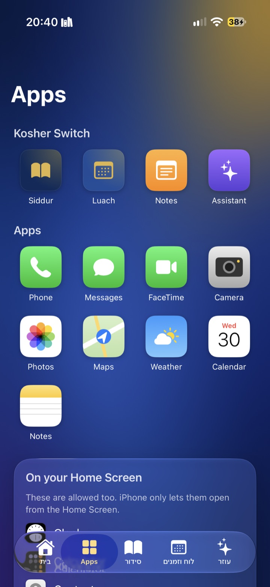
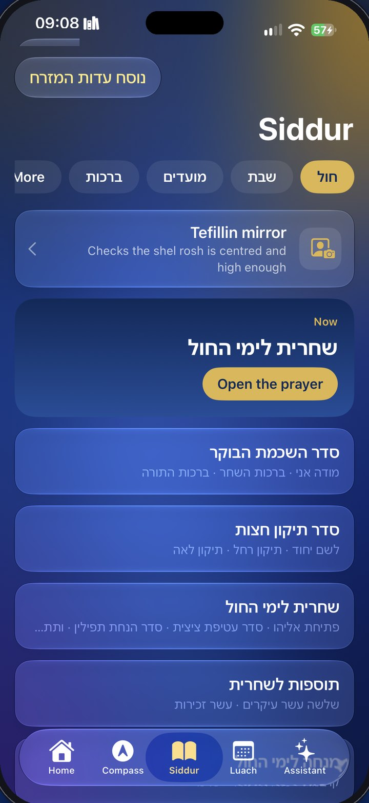
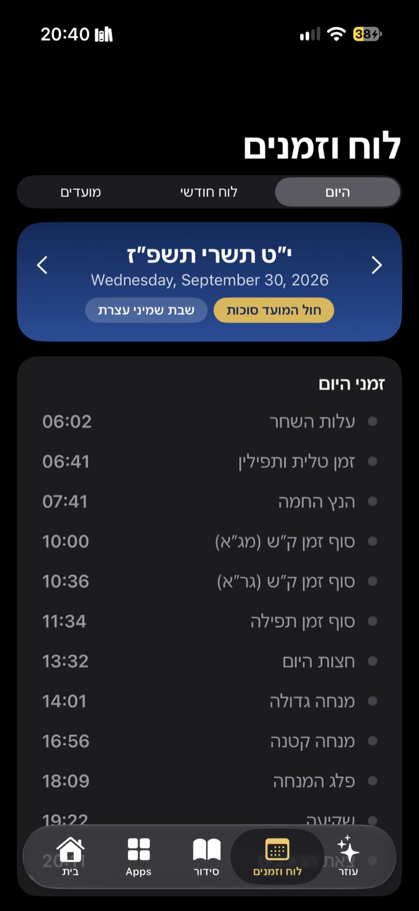
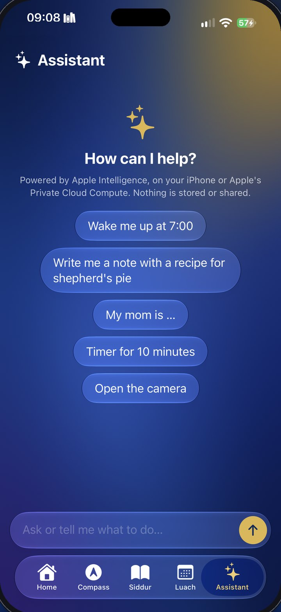

המתג
מתג זהב אחד.
בוחרים אילו אפליקציות נשארות, אילו נעלמות, ואיך האתרים עובדים. ואז לחיצה אחת מפעילה מצב כשר. רק הקוד שלכם מכבה אותו.
בית כשר
בית כשר ורגוע.
השעון, התאריך העברי ומה שמגיע: חול המועד, שבת, החג הבא. הסידור, הלוח והאפליקציות שלכם במרחק לחיצה.
האפליקציות שלכם
רק האפליקציות שבחרתם.
טלפון, הודעות, מצלמה, מפות, מה שהחלטתם. כל השאר מוסתר ממסך הבית או מציג את המסך הכשר.
סידור
סידור שלם, בנוסח שלכם.
אשכנז, ספרד או עדות המזרח. הוא נפתח על התפילה של עכשיו, עם ימות החול, שבת והמועדים.
לוח
זמני היום לפי המיקום שלכם.
זמני היום מעלות השחר ועד צאת הכוכבים, לוח חודשי והמועדים, מחושבים בטלפון לפי המיקום שלכם.
עוזר
עוזר שנשאר נקי.
”תעיר אותי ב-7“, ”תתקשר לאמא“, ”פתק עם מתכון“. הוא עובד על האייפון ושום דבר לא נשלח לשום מקום. כבוי כברירת מחדל.